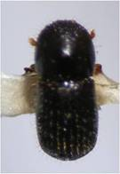

| Home |
| PEST OF TEA |
mAJOR pESTS |
| 1. Tea mosquito bug |
| 2. Mites |
| - Red spider mite |
| - Scarlet mite |
| - Purple mite |
| - Pink mite or orange mite |
| - Yellow mite |
| 3. Shot hole borer |
| 4. Sapling borer |
mINOR pESTS |
| 1. Flushworm |
| 2. Tea tortrix |
| 3. Tea leaf roller |
| 4. Scales |
| 5. Thrips |
| 6. Tea jassid |
| 7. Aphid |
| Questions |
| Download Notes |
TEA :: MAJOR PEST :: SHOT HOLE BORER
3. Shot hole borer: Euwallacea fornicatus (Scolytidae: Coleoptera)
Damage symptoms :
Presence of round shot holes in primary branches. Mortality of buds and dieback symptoms in branches occur. Presence of circular or longitudinal tunnels inside the stem.
Bionomics :
|  | Female beetle is black, small and cylindrical. Male is half the size of female, devoid of wings. Egg period 4 – 6 days, three larval instarslasts for16 – 18 days, pupae whitish and pupal period 7 – 9 days. Total life cycle lasts for 27 – 33 days. |
IPM
- Selectively remove badly affected branches at the time of pruning.
- Apply nitrogen and potassium at 1:2 ratio in the prune year and mid cycle
- Placing of partly dried cut stems of a jungle plant Montanoa bipinnatifida @ 400 ha attracts shot hole borer adults
- Perform chemical control in the third and fourth years, if the average percentage of
infestation in the new wood is at or above 15 per cent at the end of second year
- Immediately after pruning spray quinalphos or chlorpyriphfos 1.0 L or lambdacyhalothrin 500 ml or lindane 20 EC 2.0 L in 500 L water
- Spray Beauveria bassiana available as a wettable powder(Biopower)